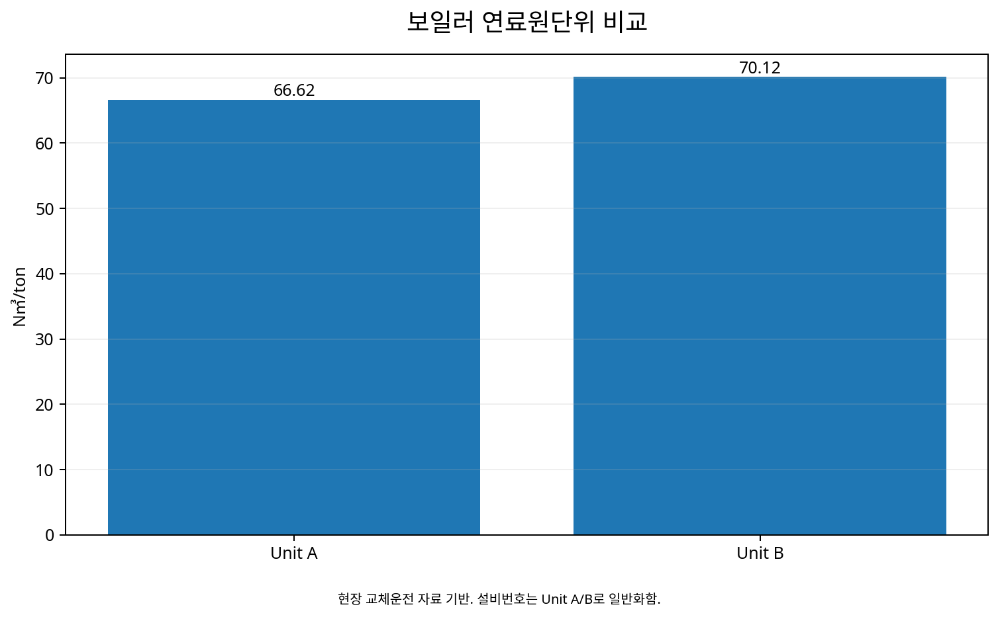

보일러 호기별 에너지원단위 비교 및
고효율 호기 우선운전을 통한 시스템 효율개선
동일한 스팀수요를 공급하는 여러 보일러의 가스 원단위(N㎥/ton)를 실측 비교하고, 실제 교체운전 Test를 통해 호기별 효율차이를 검증한 뒤 원단위가 낮은 보일러를 우선 운전하여 Boiler System의 연료효율을 개선한 현장 최적화 사례.
BoilerN㎥/tonPart-loadChange-over TestPriority Operation1. 같은 스팀을 만드는 보일러인데 가스사용량은 왜 다를까?
여러 대의 보일러가 병렬로 설치된 공장에서는 용량이 같더라도 실제 효율이 같다고 볼 수 없다. 설비의 연식과 상태, 연소조건, 부하율과 운전조건이 달라지면 동일한 1 ton의 스팀을 생산하는 데 필요한 가스량도 달라질 수 있다.
2. 실제 프로젝트에서도 보일러 기기별 효율차이가 문제로 확인되었다
완료자료에는 “보일러 기기별 효율차이가 있음”이 현상으로 기록되어 있고, 에너지효율관리 시스템을 통해 기기별 효율을 판단할 수 있게 되었다고 정리되어 있다.
개선방향 역시 명확했다. 기기별 원단위(N㎥/ton)를 Monitoring하고, 보일러를 실제로 교체운전한 뒤 원단위를 비교하여 원단위가 낮은 호기를 우선 운전하는 것이었다.
3. 비교기준은 가스사용량이 아니라 N㎥/ton이다
가스소비량만 비교하면 스팀 생산량 차이가 결과에 섞인다. 따라서 생산된 스팀량으로 연료사용량을 정규화하여 호기별 Specific Energy를 비교한다.
에너지원단위 = 가스소비량(N㎥) ÷ 스팀생산량(ton)
이 지표가 낮을수록 같은 양의 스팀을 더 적은 가스로 생산한 것이므로 실제 운전효율 비교에 유용하다.
4. 단순 Ranking보다 교체운전 Test가 중요하다
서로 다른 날의 보일러 원단위를 단순 비교하면 Steam Demand와 운전조건 차이가 섞일 수 있다. 그래서 실제 현장에서는 운전호기를 교체하면서 성능을 확인했다.
Demand
N㎥/ton
Test
확인
Rule
즉 “2호기가 더 좋아 보인다”가 아니라 실제 운전변경 후 원단위가 어떻게 달라지는지를 확인하는 Test & Adjust 방식이다.
5. 동일 30 ton/h 보일러에서도 3.5 N㎥/ton 차이가 확인되었다
| 구분 | 2호기 | 3호기 | 차이 |
|---|---|---|---|
| 용량 | 30 ton/h | 30 ton/h | 동일 용량 |
| 원단위 | 66.62 N㎥/ton | 70.12 N㎥/ton | 3.5 N㎥/ton |
완료자료에는 3호기에서 2호기로 교체운전한 결과 원단위가 약 5% 감소한 것으로 정리되어 있다. 동일한 정격용량이라도 실제 운전효율에는 의미 있는 차이가 있었던 것이다.
6. 그런데 ‘효율 좋은 보일러’만 찾으면 끝나는 것은 아니다
같은 완료자료에는 부하율 40% 이하 운전 시 원단위가 상승하는 경향도 기록되어 있다. 따라서 원단위가 좋은 호기를 우선 가동하더라도 Steam Demand가 너무 낮아 저부하 운전영역에 들어가면 효율이 다시 나빠질 수 있다.
이 때문에 호기선택과 함께 가동대수와 각 보일러의 부하율을 같이 판단해야 한다.
7. 현장의 문제는 결국 ‘Selection + Staging + Loading’이다
보일러 시스템을 최적화하려면 세 가지 질문이 연결된다. 어느 호기가 효율적인가, 현재 스팀부하에서 몇 대를 운전할 것인가, 그리고 가동 중인 보일러에 얼마의 부하를 배분할 것인가이다.
효율
Selection
Staging
Loading
N㎥/ton
8. Test 전에 비교 가능한 운전조건을 준비한다
| 확인항목 | 목적 |
|---|---|
| Steam Flow | 실제 생산량 및 부하율 계산 |
| Fuel Gas Flow | N㎥/ton 산정 |
| Steam Pressure | 공급조건 차이 확인 |
| Feed-water Temperature | 열입력조건 차이 확인 |
| Blowdown / Condensate Return | 열손실 및 급수조건 확인 |
| O₂ / 배기가스 조건 | 연소상태 영향 확인 |
| Load Factor | 동일·유사 부하영역 비교 |
원자료에서 직접 확인되는 핵심 KPI는 가스 원단위와 부하율이다. 급수온도·배기가스 등은 다른 현장에 이 방법을 재현할 때 비교의 품질을 높이기 위한 기술적 확장항목이다.
9. 완료자료에서는 약 5%의 원단위 개선이 확인되었다
N㎥/ton
N㎥/ton
원단위 개선
여기서 중요한 것은 정격효율표가 아니라 실제 Steam Demand 조건에서 측정된 운전 원단위를 이용해 우선운전 호기를 결정했다는 점이다.
10. 완료보고의 경제성은 약 1.8억원/년이었다
완료자료는 원단위 차이 3.5 N㎥/ton, 평균 증발량 약 25 ton/h, 적용시간 약 3,600 h/년과 당시 가스단가 약 595.5원/N㎥를 이용하여 약 187.6백만원/년(완료자료 표현 약 1.8억원/년)의 가스비 절감으로 산정했다.
66.62 vs 70.12 N㎥/ton, 3.5 N㎥/ton 차이, #3→#2 교체운전 약 5% 개선과 약 1.8억원/년은 완료자료에 제시된 프로젝트 값이다. 경제성은 당시 운전시간·스팀부하·가스단가를 전제로 한다.
11. 이 사례의 핵심은 설비교체가 아니라 운전순서의 변경이다
새 보일러를 설치하지 않고도 이미 설치된 설비 가운데 실제 효율이 좋은 호기를 찾아 우선적으로 부하를 담당하게 하는 방식이다. 따라서 투자비가 큰 설비교체 전에 수행할 수 있는 Operational Optimization의 대표적인 접근이다.
12. 단, 저효율 호기는 ‘나쁜 설비’로 바로 결론내리지 않는다
원단위가 높은 이유는 설비 자체의 노후화뿐 아니라 저부하 운전, 공기비, Burner 상태, Fouling, Blowdown, 급수조건이나 계측오차일 수도 있다. 따라서 Ranking 결과는 설비폐기 판단이 아니라 추가 진단의 출발점으로 사용하는 것이 좋다.
저효율 호기를 정비한 뒤 다시 Change-over Test를 수행하면 개선효과도 검증할 수 있다.
13. 18단계 Boiler 운전최적화 Process
① Boiler Inventory → ② Steam Demand → ③ Gas Flow → ④ Steam Flow → ⑤ N㎥/ton → ⑥ Load Factor → ⑦ 호기별 Ranking → ⑧ 비교가능 부하구간 선정 → ⑨ Change-over 계획 → ⑩ 교체운전 → ⑪ 안정화 → ⑫ N㎥/ton 재측정 → ⑬ 고효율 호기 확인 → ⑭ 저부하 영역 확인 → ⑮ 가동대수 검토 → ⑯ 우선운전 Rule → ⑰ System 원단위 Monitoring → ⑱ 주기적 재평가
14. 확대응용 — 병렬보일러 Plant의 Dispatch 기준으로 발전시킬 수 있다
여러 대의 보일러가 병렬운전되는 제조공장, 식품·제약공장, 병원과 지역 Steam Plant에 같은 방법을 적용할 수 있다. 특히 서로 다른 용량·연식·Burner를 가진 설비가 혼재하면 호기별 원단위 차이가 운전순서에 직접 영향을 줄 수 있다.
단, CASE65의 66.62나 70.12 N㎥/ton을 다른 현장의 Benchmark로 복사하지 않고 각 Plant에서 자체 Performance Curve를 구축해야 한다.
15. Steam Demand가 변하면 최적 호기조합도 달라질 수 있다
낮은 스팀수요에서는 대형보일러 한 대가 30% 부하로 운전하는 것보다 소형보일러가 높은 부하율로 운전하는 편이 유리할 수 있고, Peak Demand에서는 여러 대의 조합이 필요할 수 있다.
따라서 장기적으로는 Steam Demand × Available Boilers × Unit Efficiency Curve → Minimum System Fuel 형태의 Operating Map을 구축하는 것이 좋다.
16. AI 기반 Boiler Dispatch로 확장할 수 있다
생산계획, Steam Demand, 외기·급수조건과 호기별 가스 원단위 데이터를 축적하면 다음 시간대의 Steam Demand와 각 보일러 조합의 연료사용량을 예측할 수 있다.
Forecast
Model
Loading
예측
Dispatch
초기에는 운영자에게 권장 호기와 예상 원단위를 제시하는 Advisory Mode로 시작하고, 충분한 검증 후 자동 Sequencing으로 확대하는 방식이 현실적이다.
17. 보일러에서도 가동대수와 부하배분을 함께 최적화한다
호기별 효율비교는 출발점이다. 실제 Boiler System의 연료효율을 높이려면 현재 Steam Demand에 따라 어떤 보일러를 선택하고, 몇 대를 가동하며, 각 보일러에 얼마의 부하를 배분할 것인지를 함께 판단해야 한다.
스팀수요가 낮을 때 여러 대를 저부하로 운전하면 원단위가 상승할 수 있고, 반대로 수요가 증가하면 추가호기의 기동이 필요하다. 따라서 운전목표는 특정 호기의 부하율을 높이는 것이 아니라 필요한 스팀 공급조건을 만족하면서 Boiler System 전체의 연료 원단위(N㎥/ton)가 최소가 되는 운전조합을 찾는 것이다.
Demand
Selection
Staging
Loading
N㎥/ton
데이터와 분석 시각화

18. Evidence & Measurement Boundary
완료자료에서 직접 확인되는 주요 사실은 다음과 같다.
• 보일러 기기별 연료 원단위 차이: 2호기 66.62 N㎥/ton, 3호기 70.12 N㎥/ton — 차이 3.5 N㎥/ton
• 교체운전(#3→#2) 시 약 5%의 연료 원단위 감소
• 부하율 40% 이하 운전영역에서 연료 원단위 상승 현상 확인
• 평균 증발량 약 25 ton/h, 적용시간 약 3,600 h/년과 당시 가스단가를 적용하여 완료자료에서 약 187.6백만원/년(약 1.8억원/년)의 비용절감 효과로 산정
위 수치와 교체운전 결과는 해당 프로젝트의 실제 운전조건과 평가기준에 따른 성과다. 다른 보일러나 사업장에 동일한 원단위·절감률·절감금액을 그대로 적용하지 않는다.
Selection·Staging·Loading, 추가 계측항목, Operating Map과 AI 기반 Boiler Dispatch는 이 현장사례에서 확인된 원리를 다른 보일러 시스템에 적용·고도화하기 위한 기술적 확장으로 구분한다.
19. Review 상태
Status: APPROVED / FINAL-LOCK